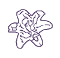

Hi, I'm Pru!

I’m a master’s student in Computer Science at Columbia University, concentrating in machine learning. I bridge product intuition with engineering, working across backend systems and algorithmic optimization while designing interfaces and building the frontend.
“What does that look like in practice?”
Day to day, I balance research with product and design responsibilities. I’ve contributed as a Research Assistant to the Accessible & Accelerated Robotics Lab (A²R) and Soros Lab through the Summer Research Institute, worked as both a Product Designer and a Product Manager at Spectator Publishing Company, and previously worked as a UX Design Intern at Wunderman Thompson.